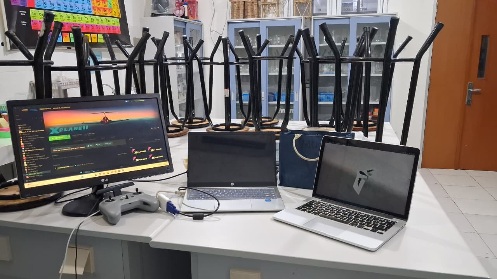
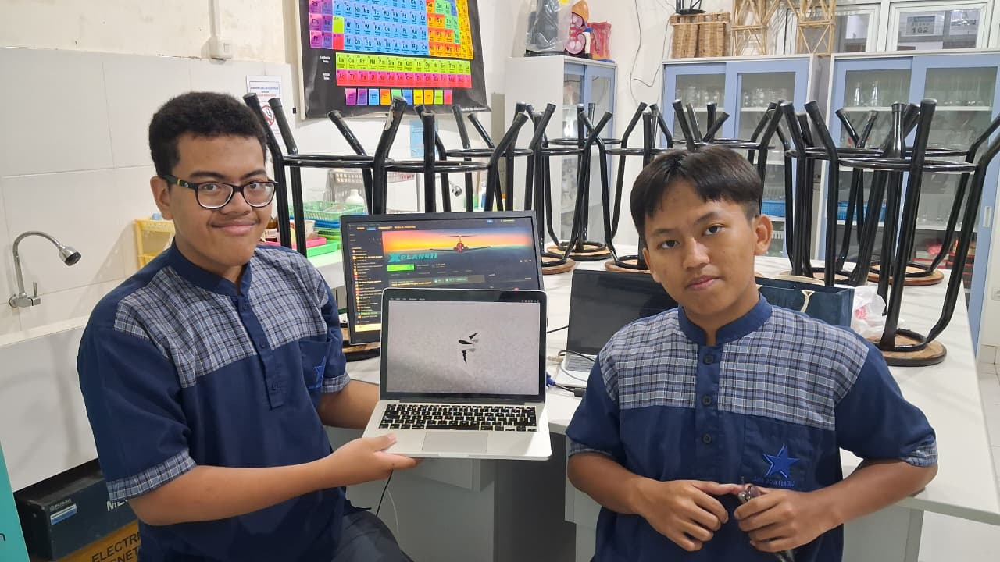
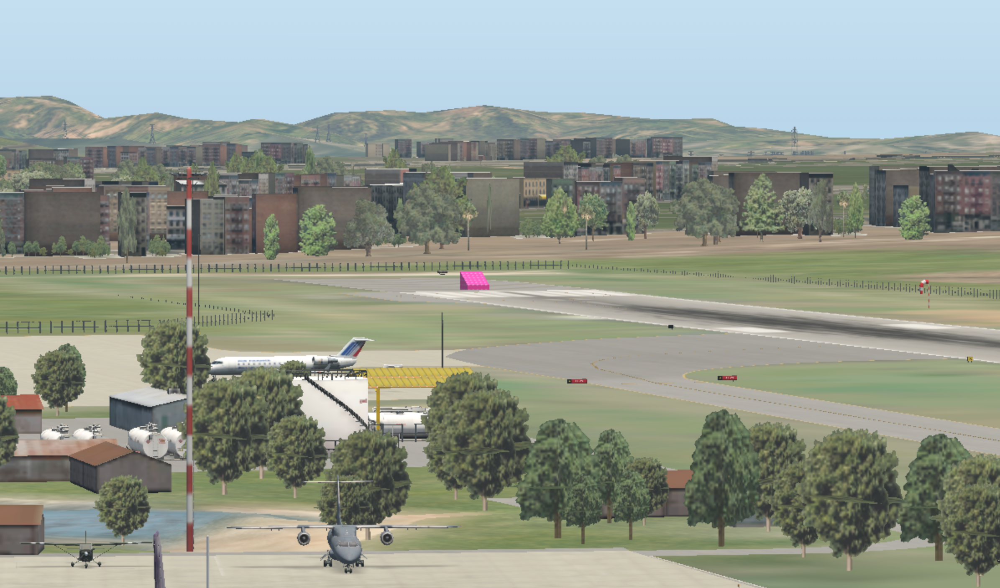
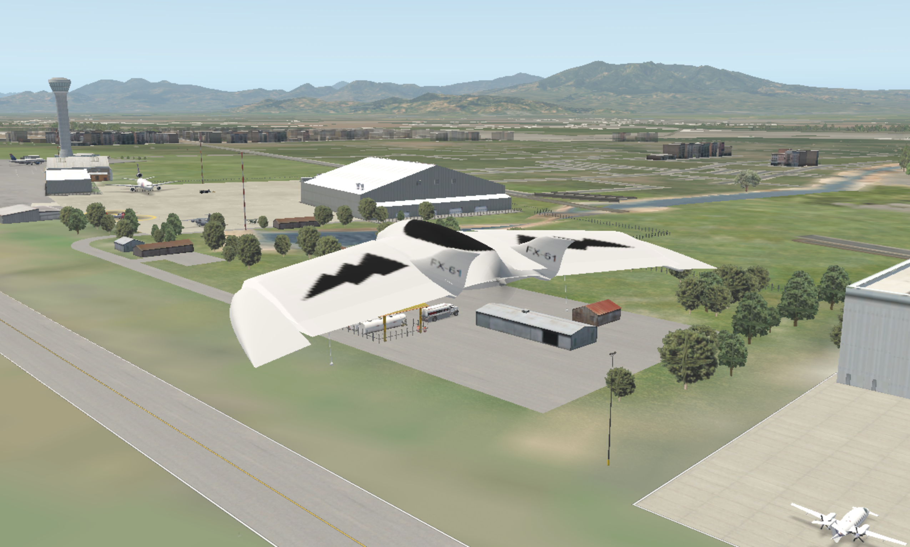

| Penelitian | Sistem Kendali Drone Kamikaze Berbasis Deteksi Objek Warna dalam Simulasi HITL |
| Tim | Musa El Hanafi & Muhammad Ihsan Fahriansyah |
| Lokasi | Lab Komputer SMA Swasta Alfa Centauri, Kota Bandung |
| Hari/Tanggal | Jumat, 10 April 2026 |
Kegiatan: Instalasi seluruh software dan toolchain yang diperlukan untuk pengembangan sistem HITL.
Software yang diinstal:
C:\Program Files (x86)\Steam\steamapps\common\X-Plane 11\VSCodeUserSetup-x64-*.exeQGroundControl-installer.exepython --version
pip --versionarm-gnu-toolchain-*-mingw-w64-x86_64-arm-none-eabi.exearm-none-eabi-gcc --versionGit-*-64-bit.exe dari link di atasgit --versionpip install MAVProxy pymavlink dronekitpython -c "import pymavlink; print('pymavlink OK')"
python -c "import dronekit; print('dronekit OK')"Hasil: Semua tools berhasil terinstal dan berjalan. Environment build ArduPilot (waf configure --board fmuv3) berhasil diverifikasi.
Dokumentasi:

Kegiatan: Menghubungkan dua laptop dalam satu sesi X-Plane — satu sebagai player (pengendali) dan satu sebagai viewer only (pengamat).
Konfigurasi: - Laptop 1 (Player): menjalankan X-Plane sebagai host, mengendalikan penerbangan - Laptop 2 (Viewer Only): menjalankan X-Plane sebagai client, hanya menampilkan tampilan simulasi tanpa kontrol - Koneksi: via jaringan lokal (LAN/Wi-Fi)
Langkah: 1. Set IP address kedua laptop dalam satu subnet lokal 2. Di Laptop 1: buka X-Plane → Settings → Network → aktifkan "Allow other computers to control this copy of X-Plane" 3. Di Laptop 2: buka X-Plane → Settings → Network → masukkan IP Laptop 1, set sebagai Viewer Only 4. Mulai sesi penerbangan di Laptop 1 — Laptop 2 otomatis menampilkan tampilan yang sama secara real-time
Hasil: Koneksi berhasil. Laptop 2 menampilkan tampilan simulasi X-Plane secara sinkron dengan Laptop 1 sebagai viewer only.
Dokumentasi:

Kegiatan: Menambahkan model pesawat custom FX-61 Phantom ke dalam library X-Plane sebagai wahana utama pengujian HITL.
Sumber model: Model FX-61 Phantom diambil dari forum X-Plane.org: https://forums.x-plane.org/files/file/33623-fx-61-uav/
Langkah:
1. Unduh file FX-61.zip dari forum X-Plane.org (link di atas)
2. Ekstrak (unzip) FX-61.zip ke direktori X-Plane/Aircraft/Extra Aircraft/
- Pastikan hasil ekstrak membentuk folder FX-61/ berisi file .acf, .param, dan tekstur
3. Buka X-Plane → pilih aircraft FX-61 Phantom dari menu Aircraft
3. Verifikasi model aerodinamika: karakteristik fixed-wing delta wing tampil sesuai
4. Uji kontrol dasar (aileron, elevator, throttle) dalam mode manual di X-Plane
Spesifikasi FX-61 Phantom: - Bentang sayap: ±1.5 m (delta flying wing) - Kecepatan cruise: ±65–80 km/h - Payload: mendukung kamera/seeker mount
Hasil: FX-61 Phantom berhasil dimuat di X-Plane, model fisika dan kontrol permukaan berfungsi normal.
Kegiatan: Modifikasi model FX-61 Phantom di X-Plane untuk menambahkan sistem JATO guna mendukung takeoff tanpa runway panjang.
Metode modifikasi (Plane Maker):
1. Buka file .acf FX-61 di Plane Maker (tools bawaan X-Plane)
2. Tambahkan engine tambahan bertipe "Rocket/JATO" pada tab Engines
3. Set parameter JATO:
- Thrust: ~50–80 N (disesuaikan berat FX-61)
- Burn time: ±1 detik
- Posisi: center-rear fuselage
4. Simpan file .acf dan reload di X-Plane
Hasil: JATO berhasil ditambahkan. FX-61 mampu melakukan accelerated takeoff dalam jarak < 30 m di X-Plane menggunakan dorongan JATO selama ±1 detik.
Kegiatan: Menambahkan custom airport Bandara Husein Sastranegara (ICAO: WICC) ke dalam lingkungan X-Plane sebagai lokasi pengujian.
Langkah:
1. Unduh file Custom Scenery.zip yang berisi data airport WICC beserta objek target hot-pink
2. Ekstrak (unzip) Custom Scenery.zip ke direktori X-Plane/Custom Scenery/
3. Verifikasi folder WICC/ telah muncul di dalam Custom Scenery/
4. Restart X-Plane agar scenery baru terdeteksi dan dimuat
Hasil: Airport WICC berhasil dimuat di X-Plane. Runway 11 dan objek target hot-pink tampil sesuai posisi yang direncanakan.

Kegiatan: Uji coba penerbangan perdana FX-61 Phantom di lingkungan simulasi Bandara Husein Sastranegara (WICC).
Skenario pengujian: 1. Spawn FX-61 di threshold runway 11 WICC 2. Takeoff menggunakan JATO → transisi ke glide normal 3. Terbang manual di sekitar area WICC 4. Observasi respons aerodinamika: roll, pitch, yaw, kecepatan 5. Landing kembali di runway 11
Parameter yang diamati:
| Parameter | Nilai |
|---|---|
| Kecepatan takeoff | ±55 km/h |
| Kecepatan cruise | ±70 km/h |
| Altitude jelajah | 75–100 m AGL |
| Respons aileron | Normal |
| Respons elevator | Normal |
Dokumentasi:

Kendala & Tindak Lanjut: - Terrain mesh WICC perlu fine-tuning (beberapa titik ketinggian tidak rata) - JATO burn time 1 detik - Minggu depan: setup koneksi pppd Pixhawk ↔ laptop untuk HITL mode
| No | Kegiatan | Status |
|---|---|---|
| 1 | Instalasi X-Plane, VS Code, QGroundControl, Git, toolchain ArduPilot | ✅ Selesai |
| 2 | Verifikasi koneksi X-Plane via LAN (2 laptop) | ✅ Selesai |
| 3 | Tambah custom aircraft FX-61 Phantom | ✅ Selesai |
| 4 | Modifikasi FX-61 + JATO (Plane Maker) | ✅ Selesai |
| 5 | Tambah custom airport WICC (Husein Sastranegara) | ✅ Selesai |
| 6 | Uji coba terbang FX-61 di WICC — X-Plane | ✅ Selesai |
Repository logbook: https://github.com/musaelhanafi/logbook-opsi
git clone git@github.com:musaelhanafi/logbook-opsi.git
cd logbook-opsi
Pastikan SSH key sudah terdaftar di GitHub. Jika belum:
ssh-keygen -t ed25519 -C "email@gmail.com" cat ~/.ssh/id_ed25519.pubSalin output → GitHub → Settings → SSH Keys → New SSH Key → Paste → Save.
Setelah menambah atau mengedit file logbook:
cd logbook-opsi
# 1. Cek status perubahan
git status
# 2. Tambahkan file yang berubah
git add .
# 3. Commit dengan pesan deskriptif
git commit -m "logbook: tambah kegiatan 10 April 2026"
# 4. Push ke GitHub
git push
Jalankan sebelum mulai kerja, terutama jika dikerjakan di beberapa laptop:
cd logbook-opsi
git pull
logbook-opsi/
├── 01_10 April 2026/
│ ├── logbook_10_april_2026.md
│ ├── logbook_10_april_2026.pdf
│ └── (foto/screenshot)
├── 02_<tanggal>/
│ └── ...
└── README.md
Setiap sesi logbook dibuat dalam folder baru dengan format: NN_DD Bulan YYYY/.
Logbook dibuat: 10 April 2026 | Penelitian OPSI 2026 — SMA Swasta Alfa Centauri